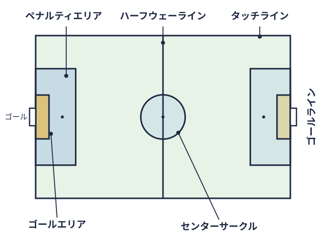
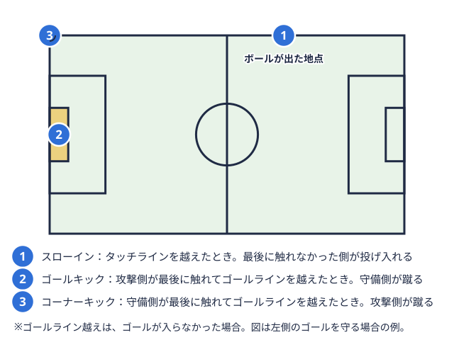

技術・戦術 2026-11-25
サッカー サイドハーフの役割とは｜大学サッカーで求められる動き方
大学のサッカー部に入ってから、サイドハーフ中盤の左右の端でプレーし、ドリブルで仕掛けたり、後ろの選手と協力して攻撃に厚みを出したりする役。 用語辞典で見るを任された。高校まではフォワード相手ゴールの近くでプレーし、得点を取ることが最も大きな役割の選手。用語辞典で見るやサイドバック守備の選手のうち、左右の端で相手の攻撃を止める役。攻めるときは前に上がり、ゴール前へボールを蹴り込む。用語辞典で見るだったのに、「サイドで張って、攻撃も守備もやってほしい」と言われて、どこまで上がり、どこまで戻ればよいのか分からない。あるいは、ウイング相手ゴール近くの左右の端から、ドリブルやゴール前へのパスで得点に絡む攻撃の選手。
用語辞典で見るを任された。高校まではフォワード相手ゴールの近くでプレーし、得点を取ることが最も大きな役割の選手。用語辞典で見るやサイドバック守備の選手のうち、左右の端で相手の攻撃を止める役。攻めるときは前に上がり、ゴール前へボールを蹴り込む。用語辞典で見るだったのに、「サイドで張って、攻撃も守備もやってほしい」と言われて、どこまで上がり、どこまで戻ればよいのか分からない。あるいは、ウイング相手ゴール近くの左右の端から、ドリブルやゴール前へのパスで得点に絡む攻撃の選手。 用語辞典で見るとサイドハーフは何が違うのか、チームの呼び方と自分の理解が合っているのか不安になる。こうした戸惑いは、ポジション争いが激しく、布陣や呼び名もチームごとに異なる大学サッカーで起こりやすい場面です。この記事では、サイドハーフの基本的な役割を整理したうえで、ウイングやトップ下中盤の選手のうち、攻撃の最前線の選手のすぐ後ろでプレーし、チャンスを作ったりシュートを狙ったりする役。用語辞典で見るとの違い、サイドバックとの連係、任されたときに確認したいこと、日々の練習で意識したい視点をまとめます。特定の戦術を正解として押しつけるのではなく、自分のチームの監督やコーチと話し合うときの土台として使ってください。
用語辞典で見るとサイドハーフは何が違うのか、チームの呼び方と自分の理解が合っているのか不安になる。こうした戸惑いは、ポジション争いが激しく、布陣や呼び名もチームごとに異なる大学サッカーで起こりやすい場面です。この記事では、サイドハーフの基本的な役割を整理したうえで、ウイングやトップ下中盤の選手のうち、攻撃の最前線の選手のすぐ後ろでプレーし、チャンスを作ったりシュートを狙ったりする役。用語辞典で見るとの違い、サイドバックとの連係、任されたときに確認したいこと、日々の練習で意識したい視点をまとめます。特定の戦術を正解として押しつけるのではなく、自分のチームの監督やコーチと話し合うときの土台として使ってください。
サイドハーフとはどんなポジションか
サイドハーフは、ミッドフィルダー守備と攻撃をつなぐ選手の総称。中盤でボールに触れる機会が多く、守備的・攻撃的な役割に分かれる。用語辞典で見る（MF）のうち、ピッチの左右の外側に位置する選手を指します。Jリーグ公式サイトのポジション解説では、サイドハーフは、サイドのエリアでドリブルを仕掛けたり、サイドバックと連動しながら攻撃に厚みを生んだりする役割として紹介されています。あわせて、中央のエリアでボールを受けてシュートチャンスに絡むことも求められると説明されています。
別の解説メディアでも、サイドハーフは攻守に上下運動を繰り返すポジションで、サイドバックと連携して攻撃に厚みをもたらすことが主な役割とされています。つまりサイドハーフは、攻撃専門でも守備専門でもなく、サイドのレーンを往復しながら両方に関わるポジションだと捉えると、イメージしやすくなります。
呼び方は「サイドハーフ」「サイドMF」「SH」などチームによって異なります。さらに、布陣によっては同じ位置の選手を「ウイング」と呼ぶチームもあります。自分のチームでどの言葉がどの動きを指しているのかは、最初に確認しておくと混乱を避けられます。
攻撃面での役割
攻撃でのサイドハーフには、主に次のような仕事が期待されます。これらはあくまで一般的な整理で、チームの戦い方によって比重は変わります。
- サイドでの仕掛け: ドリブルで相手サイドバックに対して1対1を仕掛け、数的優位や時間を作る
- サイドバックとの連動: サイドバックが上がるなら内側に入ってスペースを空け、サイドバックが残るなら自分が外に張るなど、役割を入れ替えながら攻撃に厚みを出す
- クロスやラストパス: ゴール前の味方に合わせるボールを供給する
- 中央での関与: 逆サイドからのボールに合わせて中央へ入る、中央でボールを受けてシュートに絡む
- ミドルシュート: エリアの外からゴールを狙う
Jリーグ公式サイトの解説では、攻撃的なMF全般にとって、エリアの外からゴールを狙うミドルシュートも求められる能力のひとつだと説明されています。サイドに張るだけでなく、内側に入って打つ選択肢を持っておくと、相手の守備を迷わせることにつながる場合があります。
守備面での役割
サイドハーフは、攻撃のイメージが先行しやすいポジションですが、守備での仕事も小さくありません。
- 自陣への素早い帰陣: ボールを失った瞬間に、自分のサイドへ戻って相手のサイド攻撃を遅らせる
- サイドバックとの二重の守り: 相手のサイドの選手に対して、サイドバックと協力して挟む、あるいは中へ切り込ませないようにする
- パスコースの制限: 相手のサイドバックやボランチ中盤の中央で、守備をしながら後ろから攻撃を組み立てる選手。攻守のバランスを取る役。用語辞典で見るへのパスコースを、立ち位置で限定する
- 最初の守備: 前線からの守備では、相手の最終ラインゴールキーパーの前で、横に並んで守る守備の選手たちの列。この位置の高さが、守り方の特徴になる。
 用語辞典で見るからのパスの方向を絞る役割を担う場合がある
用語辞典で見るからのパスの方向を絞る役割を担う場合がある
守備のやり方は、チームが前から奪いに行くのか、自陣に引いてブロックを作るのかで大きく変わります。同じサイドハーフでも、自陣深くまで戻る約束のチームと、高い位置を保つ約束のチームがあります。ここは自分の感覚で決めず、チームの約束事に合わせることが大切です。
ウイング・トップ下・ウイングバックとの違い
サイドハーフを理解するうえで、隣接するポジションとの違いを整理しておくと役立ちます。以下はJリーグ公式サイトの解説や、一般的な用語の使われ方をもとにした整理です。
| ポジション | 位置の目安 | 主な特徴 |
|---|---|---|
| サイドハーフ | 中盤の左右 | 攻守の上下動、サイドバックと連動して攻撃に厚みを出す |
| ウイング | サイドハーフより高い位置 | ドリブルやクロスに加え、中へ切れ込んでのシュートなど得点に直結するプレー |
| トップ下 | フォワードに近い中央 | ゴール前の危険なエリアで仕掛ける、スルーパスやシュート |
| ウイングバック | 3バックの両脇 | 守備ラインにも攻撃にも関わり、サイドを一人で受け持つ |
Jリーグ公式サイトでは、ウイングはサイドハーフよりもさらに高い位置でプレーする攻撃的なポジションで、中に切れ込んでシュートを放ったり、逆サイドからのクロスに合わせてゴールを狙ったりと、より得点に直結するプレーが求められると紹介されています。トップ下については、ほとんどフォワードに近い位置で、ゴール前の危険な位置でドリブルを仕掛けたり、スルーパスを出したり、スペースでボールを受けてシュートを打ったりする役割とされています。
ただし、ポジションの呼び名は布陣によって変わります。4-4-2のサイドハーフと、4-3-3のウイングは、立ち位置が近くても求められる守備の量が違う場合があります。名前だけで判断せず、「自分は何メートル戻るのか」「どこまで中に入ってよいのか」を指導者に確認するほうが確実です。
サイドバックとの連係がカギになる
サイドハーフの働きは、後ろにいるサイドバックとの関係で大きく変わります。サイドバックの役割そのものはサイドバックの攻守の役割の記事で整理していますので、あわせて確認してください。
連係で意識したい基本は次の3点です。
- 上がるのは片方だけにするという約束: 二人が同時に高い位置を取ると、背後のスペースを使われやすくなります。どちらが上がり、どちらが残るのかを、試合前に決めておく
- 声とジェスチャー: 自分が中へ入るとき、サイドバックに「外を使って」と伝えるなど、動きの意図を共有する
- 守備時の距離感: サイドバックとサイドハーフの間が空きすぎないよう、相手のサイドの選手に対して二人で対応できる距離を保つ
連係の質は、練習で一緒にプレーする時間に比例して高まりやすい部分です。普段の練習から、組む相手の癖や得意な動きを観察しておくことが助けになる場合があります。
大学サッカーでサイドハーフに求められやすいこと
高校から大学に進むと、試合のテンポやフィジカルの強度が上がり、サイドでボールを持てる時間が短く感じられる場合があります。そのため、ボールを受ける前に周囲を確認し、次のプレーを準備しておく習慣が重要になります。
また、大学サッカーは部員数が多く、同じポジションの選手同士が出場機会を争う環境です。サイドハーフは、攻撃での個人の突破力や、守備での献身性が目に見えて評価されやすいポジションです。自分の強みがドリブルなのか、クロスの精度なのか、運動量や切り替えの速さなのかを、練習試合の映像で整理してみてください。
リーグ全体の傾向を知ることも、参考になります。本サイトでは、関東・関西・東北・北信越の4連盟、それぞれ1部・2部の順位表やチームページ、記録室を公開しています。たとえば関東大学サッカーリーグ1部の順位表で、得点の多いチームと失点の少ないチームを見比べると、サイドからの攻撃に力を入れているチームがどこにあるのかを考える手がかりになります。関西のリーグを見たい場合は関西学生サッカーリーグ1部の順位表、所属チームの一覧は関東1部のチーム一覧、戦績の詳細は関東1部の記録室から確認できます。なお、順位表は試合結果から集計されたもので、サイドハーフ個人の評価を直接示すものではありません。あくまでチームの傾向をつかむための材料として使ってください。
サイドハーフの力を伸ばす練習の視点
サイドハーフの力を伸ばすために、特別なメニューが必要というわけではありません。日々のトレーニングで次の視点を意識すると、同じ練習でも得られるものが変わります。
- 受ける前の準備: ボールが来る前に、相手サイドバックの位置と、中のスペースを確認しておく
- 体の向きと利き足の使い分け: 外へ運ぶのか、中へ運ぶのかを、受ける体の向きで相手に読ませない工夫をする
- クロスとラストパスの反復: 的を決めて、走りながら蹴る練習を繰り返す。ゴール前の味方の動きとの合わせも、人を立てて確認する
- 切り替えの速さ: ボールを失った瞬間に、まず自分のサイドへ戻る動きを習慣にする
- 走り続けるための土台づくり: 上下動の多いポジションなので、練習後のケアや食事、睡眠を含めて、疲れを残さない工夫をする
- 映像での振り返り: ボールを持っている場面だけでなく、持っていない時間の位置取りも見返す
特に6つ目は、サイドハーフが「ボールを触っていない時間」に多くの仕事をしているポジションだという点に関わります。触った回数だけで働きを判断せず、守備でサイドを締められていたか、味方の逃げ場になれていたかを見直す習慣が役に立ちます。
他のポジションとの関係を整理する
サイドハーフは、隣り合う選手との関係で役割が決まるポジションです。中盤の底を担う選手との関係はボランチの役割の記事、前線の動きはフォワードの役割と求められる能力の記事で整理しています。各ポジションの全体像と向いている特徴はポジション適性・特徴の記事も参考になります。
たとえば、ボランチがサイドへ流れてくる約束のチームなら、サイドハーフは中へ入りやすくなります。逆に、ボランチが中央に残るチームなら、サイドハーフが内側のスペースを使う場面が増えるかもしれません。周りの選手の動きとセットで、自分の役割を考えてみてください。
ポジションを任された・コンバートを打診されたときに確認したいこと
高校までの経験とは違うポジションを任されたとき、まず確認しておきたい点を挙げます。
- 自分に期待されている役割: 突破なのか、クロスなのか、中に入っての得点なのか、守備の貢献なのか
- 守備でどこまで戻るのか: 自陣深くまで下がる約束か、高い位置を保つ約束か
- サイドバックとの上がり下がりの約束: どちらが先に上がるのか、役割を入れ替えるタイミングはあるのか
- 中に入ってよい範囲: ペナルティエリアゴール前にある大きな長方形の区画。ゴールを守る選手（ゴールキーパー）が手を使えるのは、この中だけ。

用語辞典で見る付近まで入ってよいのか、外に張り続けるのか - セットプレープレーが止まったあと、コーナーキックやフリーキックなど、決まった形で再開する場面からの攻撃や守備。

用語辞典で見るでの役割: キッカーなのか、ニアやファーへ走るのか、こぼれ球を拾う位置に立つのか
これらを指導者や先輩と話し合っておくことで、試合中の迷いを減らしやすくなります。コンバート選手の担当する位置を変えること。例えば、攻撃の選手が守備の位置を任される。用語辞典で見るは「向いていないから外された」のではなく、チームの事情と本人の特徴の組み合わせから生まれる場合もあります。戸惑いがあるときは、まず役割を言葉にしてもらうことから始めてみてください。
まとめ
サイドハーフは、サイドのレーンで攻守の上下動を繰り返し、サイドバックと連動して攻撃に厚みを出すポジションです。ウイングはサイドハーフより高い位置でより得点に直結するプレー、トップ下はフォワードに近い中央で仕事をする、という違いがありますが、呼び名は布陣やチームによって変わります。まずは、自分の役割、守備でどこまで戻るか、サイドバックとの約束を確認し、受ける前の準備、体の向き、切り替えといった基本を積み重ねてください。リーグ全体の傾向は、本サイトの順位表やチームページも参考にしながら確認できます。
出典
この部活・競技を応援したい方へ。
取材してほしい部活を募集中
部活を続けながら、就活も進めたい方へ
体育会の学生のための就活相談です。無料で、メールアドレス・学年・所属の入力だけで始められます。